건축설비산업기사 (2013-06-02 기출문제)
1과목: 건축일반
1. 주택설계의 기본방향과 가장 거리가 먼 것은?
- 주부 동선의 확장
- 가족 본위의 주택
- 가사노동의 경감
- 생활의 쾌적함 증대
(정답률: 94%)

2. 구조용 목재의 조건으로 옳지 않은 것은?
- 건조변형, 수축성이 적을 것
- 산출량이 많고 구입이 용이할 것
- 잘 썩지 않고 충해에 대한 저항이 작을 것
- 강도가 크고 공작이 용이할 것
(정답률: 80%)
3. 종합병원 건축의 클로즈드 시스템의 계획상 요점에 대한 설명으로 옳지 않은 것은?
- 외과계통 각과는 소 진료실을 다수 설치하도록 한다.
- 왜래규모 산정시 보통 병상수의 2~3배의 환자를 1일 환자수로 예상한다.
- 중앙주사실, 회계, 약국 등은 정면 출입구 근처에 설치한다.
- 동선을 체계화하고 대기공간을 통로공간과 분리해서 대기실을 독립적으로 배치한다.
(정답률: 80%)
4. 종합병원의 건물군을 3가지로 분류할 때 그 분류와 가장 거리가 먼 것은?
- 중앙진료부
- 외래진료부
- 입원수속부
- 변동부
(정답률: 73%)
5. 건축구조용 부재에 대한 설명으로 옳지 않은 것은?
- H형강은 대체로 폭에 비해 높이가 낮은 것이 보로 사용된다.
- I형강은 주로 작은 보, 소형 기둥 등에 사용된다.
- 강판은 판의 두께에 의해 박판, 후판 등으로 분류한다.
- 감관은 각형 강관과 원형 강관이 있다.
(정답률: 81%)
6. 일조 및 통풍 등 교실의 환경조건이 균등하고 구조계획이 간단한 학교의 배치 형식은?
- 집합형
- 폐쇄형
- 배터리형
- 분산병렬형
(정답률: 73%)
7. 철골접합 방법 중 용접 접합을 사용하는 이유로 옳지 않은 것은?
- 접합에 사용되는 강재가 절감된다.
- 소음이 없다.
- 품질검사가 쉽다.
- 응력전달이 확실하다.
(정답률: 76%)
8. 계단의 길이가 길거나 돌음부분이 있은 경우 중간에 설치하는 계단 구성 요소는?
- 계단실(stair case)
- 계단참(stair landing)
- 디딤판(tread)
- 챌판(riser)
(정답률: 92%)
9. 학교운영방식 중 플래툰형(platoon type)에 대한 설명으로 옳은 것은?
- 전 학급을 일반교실과 특별교실로 반씩 나누어 학습을 행하고 일정시간 후에 이동하고 교대하는 방식이다.
- 전 교과를 각 학급교실에서 행하며 개개의 교실은 전교과에 대응 가능한 공간과 설비를 필요로 하는 방식이다.
- 학생의 이동이 전혀 없고, 각 학급마다 가정적인 분위기를 만들 수 있어 초등학교 저학년에 가장 권장되는 방식이다.
- 전 교과에 대해서 전용의 교과교실을 설치하고 일반교실은 없으며 학생은 시간표에 따라서 각 교실로 이동하는 방식이다.
(정답률: 80%)
10. 철골조 주각에 사용되는 부재가 아닌 것은?
- 윙 플레이트(wing plate)
- 베이스 플레이트(base plate)
- 데크 플레이트(deck plate)
- 클립 앵글(cilp angle)
(정답률: 74%)
11. 주택의 다용도실(utility room)에 대한 설명으로 옳지 않은 것은?
- 의류의 유지 및 관리를 위한 공간이다.
- 다목적으로 이용되기 때문에 일반적으로 남쪽에 설치한다.
- 부엌 및 서비스 야드와 연결되는 곳에 배치한다.
- 전기 콘센트 등을 사전에 계획하고 환기에 유의해야 한다.
(정답률: 85%)
12. 도서관의 출납시스템에 대한 설명으로 옳지 않은 것은?
- 열람자가 자료를 자유롭게 이용하기 위해서는 개가식이 좋다.
- 이용도가 낮은 대향의 자료에 대해서는 폐가식을 채용한다.
- 안전개가식은 열람자가 서가에서 자료를 꺼내 관원의 확인을 받고 기록을 남긴 후 열람하는 방식이다.
- 안전폐가식은 도서의 타이틀을 열람할 수 있으나 내용을 보려면 기록을 남기고 열람하는 방식이다.
(정답률: 60%)
13. 장선을 직교하여 우물반자 형태로 구성된 2방향 슬래브는?
- 중공 슬래브(void slab)
- 워플 슬래브(waffle slab)
- 플랫 슬래브(flat slab)
- 플랫 플레이트 슬래브(flat plate slab)
(정답률: 68%)
14. 주택계획에서 하루 종일 균일한 채광이 필요한 아틀리에 등의 작업실 방위로 옳은 것은?
- 동쪽
- 서쪽
- 남쪽
- 북쪽
(정답률: 61%)
15. 한식 지붕틀에 사용되는 부재가 아닌 것은?
- 동자기둥
- 대들보
- 토대
- 서까래
(정답률: 71%)
16. 호텔의 동선계획으로 옳지 않은 것은?
- 고객동선과 서비스동선이 교차되지 않도록 한다.
- 숙박고객과 연회고객의 출입구는 분리하는 것이 좋다.
- 고객동선은 목적한 장소에 갈 수 있도록 명확하게 하는 것이 좋다.
- 숙박고객이 프런트를 통하지 않고 주차장으로 갈 수 있도록 하는 것이 좋다.
(정답률: 95%)
17. 컴퓨터실 등과 같은 정보화 사무실에 가장 적합한 바닥구조는?
- 액세스플로어
- 전도바닥
- 방진바닥
- 내산바닥
(정답률: 87%)
18. 사무소 건축의 엘리베이터 배치에 대한 설명으로 옳지 않은 것은?
- 주요출입구, 홀에 직접 면해서 배치한다.
- 동선의 집중방지를 위하여 분산 배치한다.
- 각층의 위치는 되도록 동선이 짧고 간단하게 한다.
- 왜래 출입자에게 알기 쉬운 위치에 계획한다.
(정답률: 94%)
19. 철근콘크리트 독립기초에 주각을 고정상태에 가깝게 하는 방법 중 가장 적절한 것은?
- 기초판을 두껍게 한다.
- 지중보를 설치하여 강성을 높인다.
- 기초판을 작게 한다.
- 기초판의 배근을 충분히 한다.
(정답률: 60%)
20. 집합주거의 단지계획에 대한 설명으로 옳지 않은 것은?
- 단지 내에는 차량의 통과동선을 계획하지 않는다.
- 단지 내의 도로는 가급적 긴 직선도로로 계획한다.
- 단지 내 도로에 따른 건축물의 적절한 시각적 변화를 주도록 한다.
- 단지 내 외부공간은 주민들이 소속감과 친근감을 느끼도록 계획한다.
(정답률: 83%)
2과목: 위생설비
21. 다음 중 배관의 신축ㆍ팽창량을 흡수 처리하기 위해 사용되는 신축이음에 속하지 않은 것은?
- 슬리브형 이음
- 벨로즈형 이음
- 플랜지형 이음
- 스위블형 이음
(정답률: 88%)
22. 급탕배관 시공에 관한 설명으로 옳지 않은 것은?
- 팽창관은 팽창탱크에 개방한다.
- 팽창관 중간에 조절밸브를 설치한다.
- 강제순환식인 경우 배관 물매는 1/200 정도로 한다.
- 보일러 및 온수저장탱크의 배수는 간접배수로 한다.
(정답률: 85%)
23. 다음은 옥외 소화전설비에 관한 기준 내용이다. ()안에 알맞은 것은?
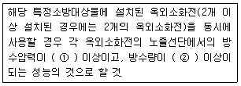
- ① 0.17MPa, ② 250ℓ/mim
- ① 0.17MPa, ② 350ℓ/mim
- ① 0.25MPa, ② 250ℓ/mim
- ① 0.25MPa, ② 350ℓ/mim
(정답률: 60%)
24. 급수설비 배관의 관경을 구하는데 사용되는 관마찰저항선도(유량선도)에서 구할 수 없는 것은?
- 유속
- 유량
- 마찰손실
- 상당관길이
(정답률: 74%)
25. 다음 급수방식 중 주로 하향급수법이 적용되는 방식은?
- 수도직결방식
- 압력수조방식
- 펌프직송방식
- 고가수조방식
(정답률: 91%)
26. 지상층의 층수가 15층인 사무소 건물인 경우, 스프링클러헤드의 기준 개수는 몇 개인가? (단, 폐쇄형스프링클러 헤드를 사용하는 경우)
- 10개
- 20개
- 30개
- 40개
(정답률: 84%)
27. 배수수직관의 관경이 100mm일 때 신정통기관의 최소관경은?
- 40mm
- 50mm
- 75mm
- 100mm
(정답률: 64%)
28. 배수관의 관경을 결정할 때 기준이 되는 것은?
- 층고
- 급수량
- 배수관의 위치
- 단위시간당 최대 배수량
(정답률: 82%)
29. 펌프설치시 유효흡입양정을 고려하는 이유는?
- 고양정을 얻기 위해서
- 대유량을 얻기 위해서
- 수격작용을 방지하기 위해서
- 캐비테이션을 방지하기 위해서
(정답률: 69%)
30. 수평투영한 지붕면적 450m2, 수직 외벽면적 500m2를 가진 지붕의 배수를 위한 수수수직관의 관경은? (단, 강우량 기준은 시간당 100mm로 하며, 수직 외벽면은 그 면적의 50%를 수평투영한 지붕면적에 가산한다.)
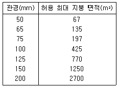
- 100mm
- 125mm
- 150mm
- 200mm
(정답률: 72%)
31. 펌프의 회전수 제어시 펌프의 회전수를 20% 증가시키면 유량은 얼마나 증가하겠는가?
- 10%
- 20%
- 44%
- 78%
(정답률: 76%)
32. 급탕배관 시스템에서 배관 및 기기로부터의 총손실열량이 4000kJ/h일 때 순환펌프의 순환수량은? (단, 물의 비열은 4.19kJ/kgㆍK, 급탕온도는 60℃, 반탕온도는 55℃이다.)
- 1.33L/min
- 2.42L/min
- 3.18L/min
- 5.25L/min
(정답률: 60%)
33. 다음의 배수트랩 중 봉수가 가장 파괴되기 어려운 구조를 가진 것은?
- S 트랩
- 드럼 트랩
- P 트랩
- U 트랩
(정답률: 67%)
34. 관 내에서 유량을 Q, 관의 직경을 d, 유체의 동점성계수를 v라고 할 때 레이놀즈수는?
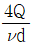
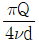
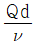
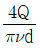
(정답률: 71%)
35. 배관 이음쇠 중 관을 직선으로 접합할 때 사용되는 것은?
- 소켓, 플랜지
- 플러그, 캡
- 엘보, 밴드
- 크로스, 티
(정답률: 88%)
36. 최고 사용압력 3.04MPa, 인장강도 3.8MPa인 압력 배관용 강관의 스케줄 번호는? (단, 안전율은 5이다.)
- 20
- 30
- 40
- 60
(정답률: 71%)
37. 수세식 화장실의 정화조 크기를 결정할 때 가장 합리적 기준이 되는 것은?
- 건물의 층수
- 건물의 연면적
- 대변기의 수량
- 화장실의 사용인원
(정답률: 82%)
38. 급수량 산정방법에 속하지 않은 것은?
- 인원수에 의한 방법
- 유효면적에 의한 방법
- 기구수에 의한 방법
- 사용시간에 의한 방법
(정답률: 71%)
39. 각종 펌프의 비속도를 크기 순서에 따라 올바르게 나타낸 것은?
- 터빈펌프＜볼류트펌프＜사류펌프＜축류펌프
- 볼류트펌프＜사류펌프＜축류펌프＜터빈펌프
- 사류펌프＜축류펌프＜터빈펌프＜볼류트펌프
- 축류펌프＜터빈펌프＜볼류트펌프＜사류펌프
(정답률: 75%)
40. 가스배관에 관한 설명으로 옳지 않은 것은?
- 건물 내에서는 미관을 고려하여 은폐 배관한다.
- 건물의 주요 구조부를 관통하지 않도록 한다.
- 배관 도중에 신축 흡수를 위한 이음을 한다.
- 옥내의 배관 재료는 강관이 주로 사용된다.
(정답률: 77%)
3과목: 공기조화설비
41. 다음의 냉동기 중 운전시 진동이나 소음이 가장 적은 냉동기는?
- 흡수식 냉동기
- 터보식 냉동기
- 스크류식 냉동기
- 왕복동식 냉동기
(정답률: 85%)
42. 외부로부터의 틈새바람량을 계산할 경우 고려할 사항이 아닌 것은?
- 틈새 길이
- 외부 풍속
- 열류의 방향
- 틈새의 통기특성
(정답률: 68%)
43. 벽체의 크기가 4m×5m, 두께가 200mm인 콘크리트벽의 실내축 표면온도가 20℃, 실외측 표면온도가 10℃일 때 실내 공기와 실내측 표면 사이의 전달열량은? (단, 실내온도 22℃, 실외온도 5℃, 내표면 열전달율 α1=8W/m2ㆍK, 외표면열전달율 α0=20W/m2ㆍK이다.)
- 320W
- 640W
- 1600W
- 3200W
(정답률: 33%)
44. 사무실에 시간당 9000kJ의 열을 방출하는 복사기가 있다. 실내온도를 22℃로 유지하기 위한 필요환기량은? (단, 외기온도 12℃, 공기의 밀도 1.2kg/m3, 공기의 정압비열 1.0kJ/kgㆍK)
- 618.8m3/h
- 678.4m3/h
- 720.2m3/h
- 742.6m3/h
(정답률: 43%)
45. 공기조화방식 중 2중덕트방식에 관한 설명으로 옳지 않은 것은?
- 혼합상자에서 소음과 진동이 생긴다.
- 열매가 공기이므로 실온변화에 대한 응답이 느리다.
- 부하특성이 다른 다수의 실이나 존에도 적용할 수 있다.
- 냉ㆍ온풍의 혼합에 의한 혼합손실이 있어서 에너지 소비가 많다.
(정답률: 66%)
46. 다음의 배관 부속의 연결 중 사용 목적이 동일하지 않은 것은?
- 플러그-캡
- 유니온-플랜지
- 부싱-이경소켓
- 티-레듀서
(정답률: 83%)
47. 공기세정기(에어워셔)속의 플러딩 노즐(flooding nozzle)의 역할은?
- 분무수의 분무
- 엘리미네이터 청소
- 균일한 공기흐름유지
- 기류에 물발울의 혼입방지
(정답률: 73%)
48. 송풍기 운전점을 A에서 B로 변환시키기 위한 방법으로 옳은 것은?
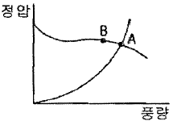
- 회전수를 높이면서 토출측 댐퍼를 조인다.
- 회전수를 낮추면서 흡입측 댐퍼를 조인다.
- 회전수와 관계없이 흡입측 댐퍼를 조인다.
- 회전수를 일정하게 유지시키면서 토출측 댐퍼를 조인다.
(정답률: 58%)
49. 각종 공기조화방식에 관한 설명으로 옳은 것은?
- 전수방식은 외기도입이 용이하다.
- 전공기방식은 배열회수가 용이하다.
- 냉매방식은 부분운전이 불가능하다.
- 공기ㆍ수방식에는 팬코일유닛방식 등이 있다.
(정답률: 52%)
50. 다음의 취출구 중 에어커튼(air-curtain)용으로 적합한 것은?
- 라인(line)형
- 베인(vane) 격자형
- 다공판(multi vane)형
- 아네모스탯(annemostat)형
(정답률: 82%)
51. 다음 중 풍량조절댐퍼에 해당하지 않는 것은?
- 스모크 댐퍼
- 스폴릿 댐퍼
- 대향익형 댐퍼
- 버터플라이 댐퍼
(정답률: 81%)
52. 배관내의 유체가 플랜지 접합부분이나 나사 접합부분의 틈을 통하여 외부로 누설되는 것을 방지하기 위해 접합부분의 틈을 없애는데 사용되는 것은?
- 패킹
- 스트레이너
- 티
- 보온재
(정답률: 87%)
53. 열에너지가 전자파의 형태로 물체로부터 방출되어 이것이 다른 물체에 도달하여 흡수되어 열로 변하게 되는 열전달현상은?
- 전도
- 대류
- 복사
- 열관류
(정답률: 69%)
54. 송풍기의 풍량제어방식 중 축동력이 가장 많이 소요되는 방식은?
- 회전수제어
- 토출댐퍼제어
- 흡입베인제어
- 흡입댐퍼제어
(정답률: 83%)
55. 다음의 가습방법 중 열수분비가 가장 큰 경우는?
- 50℃의 온수가습
- 100℃의 온수가습
- 50℃의 증기가습
- 100℃의 증기가습
(정답률: 79%)
56. 난방부하에 관한 설명으로 옳지 않은 것은?
- 현열부하와 잠열부하로 나눌 수 있다.
- 외벽과 내벽의 부하계산시는 방위계수를 고려한다.
- 덕트에서 발생하는 손실열량은 현열만을 고려한다.
- 일반적으로 일사영향, 조명기구, 재실자의 발생열량은 고려하지 않는다.
(정답률: 56%)
57. 대향류형 냉각탑과 비교한 직교류형 냉각탑의 특징을 설명한 내용 중 옳지 않은 것은?
- 팬 소요동력이 적다.
- 탑내 기류분포가 나쁘다.
- 구조상 점검ㆍ보수가 용이하다.
- 설치면적이 적고 냉각효율이 높다.
(정답률: 72%)
58. 용량이 386kW인 터보 냉동기에 1시간동안 순환되는 냉수량은? (단, 냉각기 입구의 냉수온도 10℃, 출구의 냉수온도 5℃, 물의 비열 4.19kJ/kgㆍK)
- 55.3m3/h
- 58.9m3/h
- 64.9m3/h
- 66.3m3/h
(정답률: 45%)
59. 다음과 같은 특징을 갖는 환기방식은?
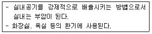
- 제1종 환기(급기팬과 배기팬의 조합)
- 제2종 환기(급기팬과 자연배기의 조합)
- 제3종 환기(자연급기와 배기팬의 조합
- 자연환기(자연급기와 자연배기의 조합)
(정답률: 87%)
60. 덕트 내에 흐르는 공기의 풍속이 10m/s, 정압이 10mmAq일 때 전압은? (단 공기의 밀도는 1.2kg/m3이다.)
- 16.12mmAq
- 20.34mmAq
- 28.84mmAq
- 30.35mmAq
(정답률: 39%)
4과목: 건축설비관계법규
61. 건축물을 건축하거나 대수선하는 경우 국토교통부령으로 정하는 구조기준 등에 따라 그 구조의 안전을 확인하여야 하는 대상 건축물에 속하지 않는 것은?
- 층수가 3층인 건축물
- 높이가 12m인 건축물
- 처마높이가 10m인 건축물
- 기둥과 기둥 사이의 거리가 10m 건축물
(정답률: 65%)
62. 건축물의 에너지절약 설계기준에 따른 단열재의 두께는 지역별로 다르다. 지역별 분류 중 중부지역에 속하지 않는 곳은?
- 서울특별시
- 경기도
- 대전광역시
- 충남 천안시
(정답률: 89%)
63. 문화 및 집회시설 중 공연장의 개별관람석의 바닥면적이 600m2인 경우, 관람석에 설치하여야 하는 출구의 최소개수는? (단, 각 출구의 유효너비가 1.5m인 경우)
- 2개
- 3개
- 4개
- 5개
(정답률: 66%)
64. 다음의 무창층의 정의에 관한 기준 내용 중 밑줄 친 요건에 해당하지 않는 것은?
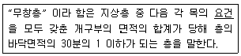
- 내부 또는 외부에서 파괴할 수 없을 것
- 개구부는 도로 또는 차량이 진입할 수 있는 빈터를 향할 것
- 개구부의 크기가 지름 50센티미터 이상의 원이 내접할 수 있을 것
- 해당 층의 바닥면으로부터 개구부 밑부분까지의 높이가 1.2미터 이내일 것
(정답률: 87%)
65. 지하가 중 터널의 경우에 길이가 최소 몇 미터 이상일 때 옥내소화전설비의 설치대상이 되는가?
- 500m
- 1,000m
- 1,500m
- 2,000m
(정답률: 73%)
66. 연면적 200제곱미터를 초과하는 건축물에서 계단을 대체하여 설치하는 경사로의 경사도는 최대 얼마를 넘지 않아야 하는가?
- 1:5
- 1:6
- 1:8
- 1:10
(정답률: 84%)
67. 비상용승강기를 설치하여야 하는 건축물로서 높이 31m를 넘는 각 층의 바닥면적 중 최대 바닥면적이 4000m2인 경우 설치하여야 하는 비상용승강기의 최소 대수는?
- 1대
- 2대
- 3대
- 4대
(정답률: 63%)
68. 다음의 소방시설 중 소화활동설비에 해당하지 않는 것은?
- 연소방지설비
- 비상콘센트설비
- 자동화재탐시설비
- 무선통신보조설비
(정답률: 71%)
69. 피난설비에 관한 기준 내용으로 옳은 것은?
- 피난기구는 지상 1층, 지상 2층에는 반드시 설치하여야 한다.
- 인명구조기구는 층수가 5층 이상인 관광호텔에 설치하여야 한다.
- 지하구의 경우에는 피난구유도등 및 통로유도등을 설치하지 않을 수 있다.
- 층수가 5층 이상 또는 연면적 2000m2이상인 건축물에는 비상조명등을 설치하여야 한다.
(정답률: 54%)
70. 다음의 ()안에 해당되지 않는 건축물의 용도는?
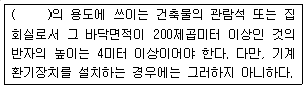
- 장례식장
- 종교시설
- 위락시설 중 유흥주점
- 문화 및 집회시설 중 전시장
(정답률: 66%)
71. 다음은 직통계단의 설치에 관한 기준 내용이다. ()안에 알맞은 것은?
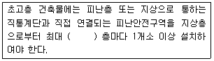
- 10개
- 20개
- 30개
- 40개
(정답률: 90%)
72. 공동 소방안전관리자 선임대상 특정소방대상물의 층수기준은?
- 3층 이상
- 5층 이상
- 8층 이상
- 10층 이상
(정답률: 75%)
73. 건축물에 설치하는 굴뚝의 옥상 돌출부는 지붕면으로부터의 수직거리를 최소 얼마 이상으로 하여야 하는가?
- 1m
- 1.2m
- 1.5m
- 1.8m
(정답률: 82%)
74. 다음의 공동주택의 친환경건축물 인증심사기준의 평가항목 중 배점이 가장 높은 것은?
- 에너지 성능
- 음식물 쓰레기 저감
- 신ㆍ재생 에너지 이용
- 기존대지의 생태학적 가치
(정답률: 64%)
75. 다음 중 건축허가 등을 함에 있어서 소방본부장 또는 소방서장의 동의를 받아야 하는 대상물에 속하는 것은?
- 항공기격납고
- 연면적이 150m2인 수련시설
- 차고로 사용하는 층 중 바닥면적이 150m2인 층이 있는 시설
- 승강기 등 기계장치에 의한 주차시설로서 자동차 15대를 주차할 수 있는 시설
(정답률: 76%)
76. 승강기를 설치하여야 하는 대상 건축물 기준으로 옳은 것은?
- 5층 이상으로서 연면적이 1,000m2 이상인 건축물
- 5층 이상으로서 연면적이 2,000m2 이상인 건축물
- 6층 이상으로서 연면적이 1,000m2 이상인 건축물
- 6층 이상으로서 연면적이 2,000m2 이상인 건축물
(정답률: 61%)
77. 건축물의 에너지절약 설계기준에 따른 건축부문의 권장 사항으로 옳지 않은 것은?
- 공동주택은 인동간격을 좁게 하여 저층부의 일사 수열량을 감소시킨다.
- 공동주택의 외기에 접하는 주동의 출입구와 각 세대의 현관은 방풍구조로 한다.
- 건축물의 제적에 대한 외피면적의 비 또는 연면적에 대한 외피면적의 비는 가능한 작게 한다.
- 거실의 층고 및 반자 높이는 실의 용도와 기능에 지장을 주지 않는 범위 내에서 가능한 낮게 한다.
(정답률: 83%)
78. 건축물에 설치하는 경계벽 및 칸막이벽을 내화구조로 하고, 지붕밑 또는 바로 윗층의 바닥판까지 닿게 하여야 하는 대상에 속하지 않는 것은?
- 사무소의 사무실 간 경계벽
- 공동주택 중 기숙사의 침실 간 칸막이벽
- 교육연구시설 중 학교의 교실 간 칸막이벽
- 단독주택 중 다가구주택의 각 가구 간 경계벽
(정답률: 66%)
79. 다음 중 건축법령상 내화구조에 속하지 않는 것은?
- 벽돌조로서 두께가 19cm인 벽
- 두께가 8cm인 철근콘크리트조 벽
- 작은 지름이 25cm인 철근콘크리트조 기둥
- 골구를 철골조로 하고 그 양면을 두께 5cm의 석재로 덮은 벽
(정답률: 71%)
80. 건축법령상 단독주택에 해당되지 않는 것은?
- 공관
- 다중주택
- 다가구주택
- 다세대주택
(정답률: 82%)